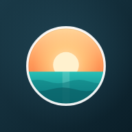

Ajoute tes photos et vidéos : elles se placent toutes seules sur la carte, là où elles ont été prises.

Notre carnet de voyage privé. Ton identifiant + le mot de passe de la bande.
Première connexion : ton profil apparaîtra à côté de tes photos.